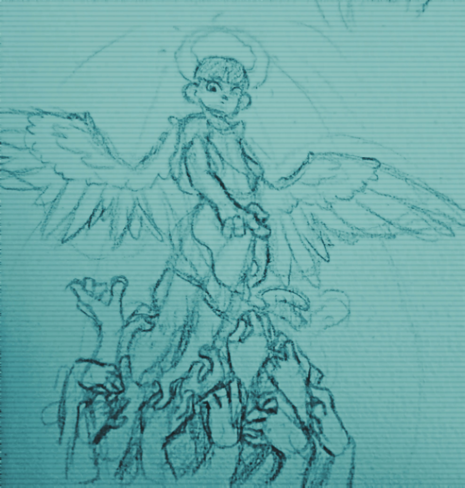

arte
Así es. Yo casi puedo dibujar. a mí me gusta dibujar sobre temas industriales, religiosos y horrorosos y puedo describir el esilo de mis dibujos es vibrante, relajado y urbano. También me gusta ilustrar lugares que me interesan, como:
- fábricas
- oficinas
- ciudades
- hospitales
- catedrales
fotografía

porque me gusta gastar mi tiempo,también me gusta tirarle fotos a sitios que me gustan y editarlas cuando me aburro. (esta es de unas tiendas en un crucero.)
música
yo hago música en LMMS studio. estos son algunas canciones que he hecho. (la primera es la mejor btw)